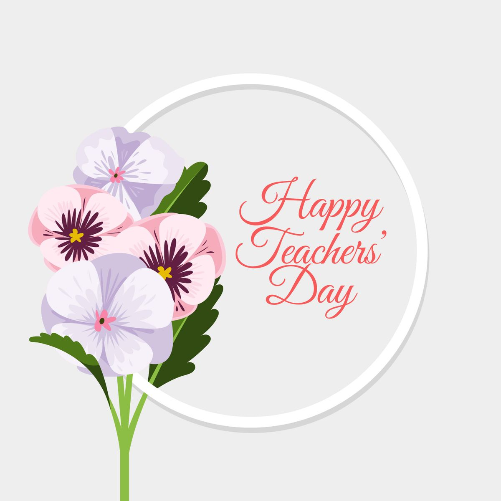
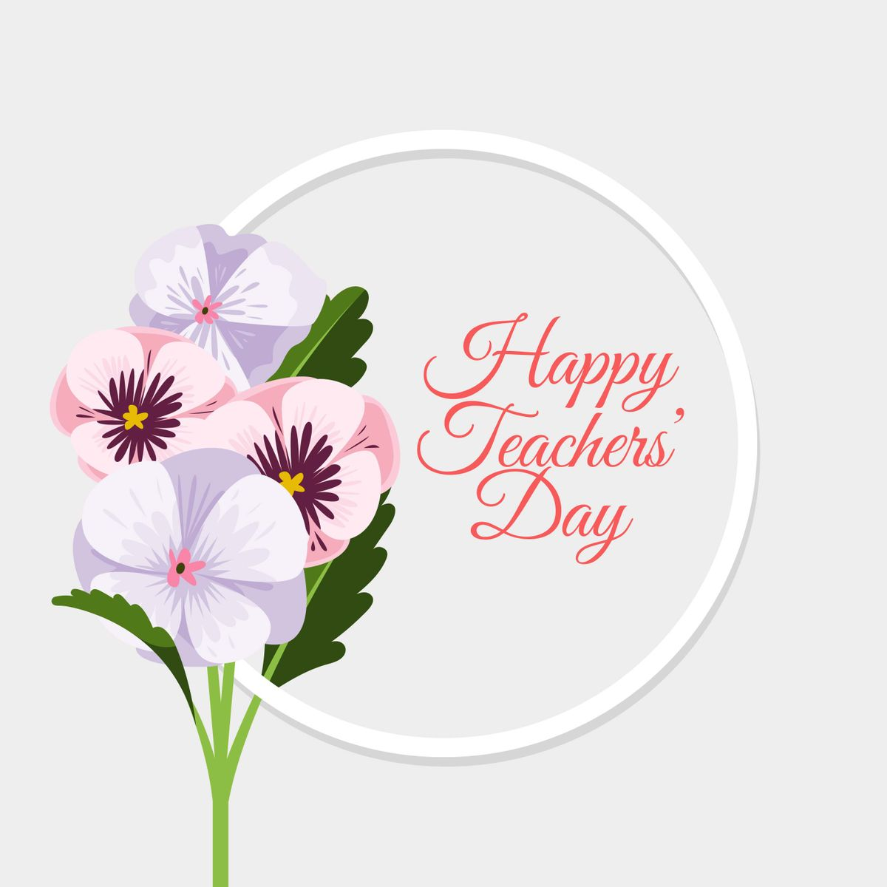

ॐ

 

Happy Teacher's Day
Dear Punita Ma'am
PUNITA NEHRU MA'AM, the principal of MY school
Whose work is certainly on schedule
Oh!! She is an enlightened soul
Preparing us for the future is her goal
To me she is more like a mother
She is better than any other
She works so hard day and night
She'll make Carmel's future bright
There is mysticism in her eyes
She's so calm, so wise
There is serenity on her face
Symbolic of simplicity and grace
She takes life as a happy song
Her ideals are so inspiring, so strong
Just like an angel sent from above
She provides us with unconditional love
She supports us with encouraging words
Her voice- as sweet as chirping birds
She also gives us freedom to have fun
And helps us show our talents to everyone
Many a times she has to scold
But that is because she wants us to be bold
She helps us to mould our attitude
For her our hearts full of gratitude
She teaches us how important its to pray
She helps us when we forget our way
She motivates us to make full use of our potential
She feels physical training is very essential
She has a special place in my heart
How beautifully she plays her part
We say that she is the best
Better than all the rest!!!
Aishwarya Dhoot(7th C)